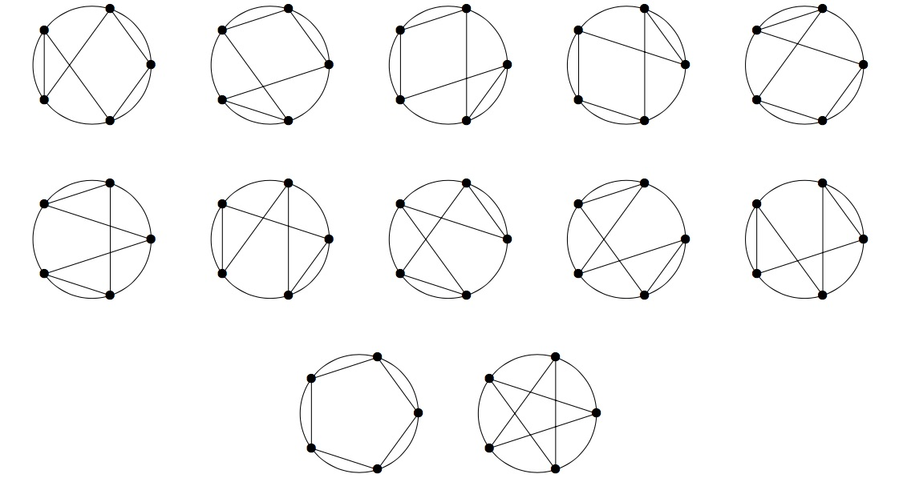

Given $n$ equally spaced points on a circle, we define an $n$-star polygon as an $n$-gon having those $n$ points as vertices. Two $n$-star polygons differing by a rotation/reflection are considered different.
For example, there are twelve $5$-star polygons shown below.

For an $n$-star polygon $S$, let $I(S)$ be the number of its self intersection points.
Let $T(n)$ be the sum of $I(S)$ over all $n$-star polygons $S$.
For the example above $T(5) = 20$ because in total there are $20$ self intersection points.
Some star polygons may have intersection points made from more than two lines. These are only counted once. For example, $S$, shown below is one of the sixty $6$-star polygons. This one has $I(S) = 4$.
You are also given that $T(8) = 14640$.
Find $\displaystyle \sum_{n = 3}^{60}T(n)$. Give your answer modulo $(10^9 + 7)$.
solve() → ?